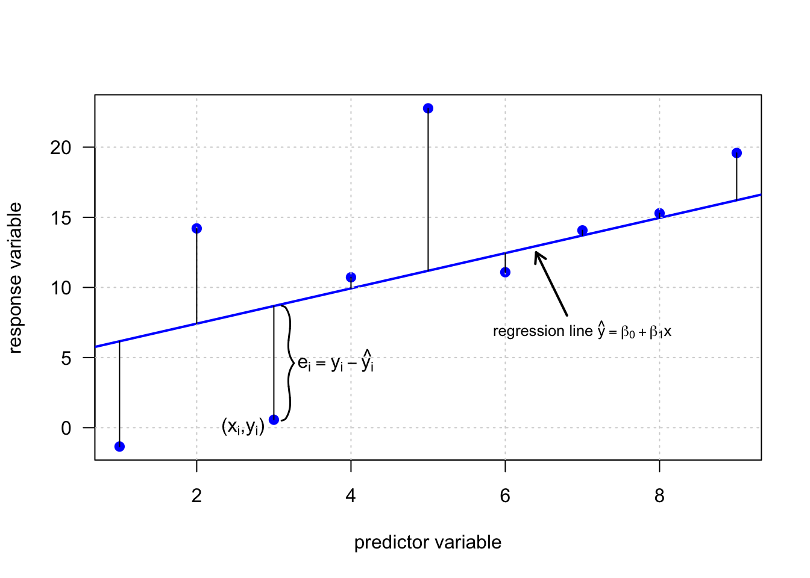

Basit doğrusal regresyon, iki nicel değişken arasındaki doğrusal ilişkiyi değerlendirmeye izin veren istatistiksel bir yaklaşımdır. Daha doğrusu, ilişkinin nicelleştirilmesini ve öneminin değerlendirilmesini sağlar. Çoklu doğrusal regresyon, bu yaklaşımın bir yanıt değişkeni (nicel) ile birkaç açıklayıcı değişken (nicel veya nitel) arasındaki doğrusal ilişkileri değerlendirmeyi mümkün kılması anlamında, basit doğrusal regresyonun bir genellemesidir.
Gerçek dünyada, çoklu doğrusal regresyon, basit doğrusal regresyondan daha sık kullanılır. Bu çoğunlukla böyledir çünkü, Çoklu doğrusal regresyon, diğer değişkenlerin etkisini kontrol ederken (yani etkiyi ortadan kaldırırken) iki değişken arasındaki ilişkiyi değerlendirmeye izin verir. Veri toplamanın da kolaylaşmasıyla, veriler analiz edilirken daha fazla değişken dahil edilebilir ve dikkate alınabilir.
Basit doğrusal regresyon, iki değişken arasında doğrusal bir ilişkinin varlığını değerlendirmeye ve bu bağlantıyı nicelleştirmeye izin verir. Doğrusallığın, iki değişkenin doğrusal olarak bağımlı olup olmadığını test etmesi ve ölçmesi anlamında doğrusal regresyonda güçlü bir varsayım olduğuna dikkat etmek gerekmektedir.
Doğrusal regresyonu güçlü bir istatistiksel araç yapan şey, açıklayıcı/bağımsız değişken bir birim arttığında yanıtın/bağımlı değişkenin hangi nicelikle değiştiğini ölçmeye izin vermesidir. Bu kavram doğrusal regresyonda anahtardır ve aşağıda verilen türde soruları yanıtlamaya yardımcı olur:
Reklama harcanan miktar ile belirli bir dönemdeki satışlar arasında bir bağlantı var mı?
Tütün vergilerindeki artış tüketimini azaltır mı?
Bölgeye bağlı olarak bir konutun en olası fiyatı nedir?
Bir kişinin bir uyarana tepki verme süresi cinsiyete bağlı mıdır?
Basit doğrusal regresyon analizinde, bağımlı değişken y ile bağımsız değişken x arasındaki ilişki doğrusal bir denklem şeklinde verilir.
\[ y=\beta_0+\beta_1x \]
Burada, \(\beta_0\) sayısına kesme noktası denir ve regresyon doğrusu ile y ekseninin (x=0) kesişme noktasını tanımlar. \(\beta_1\) sayısına regresyon katsayısı denir. Regresyon doğrusu eğiminin bir ölçüsüdür. Böylece \(\beta_1\), x değeri 1 birim arttığında y değerinin ne kadar değiştiğini gösterir. Model, x ve y arasında kesin bir ilişki verdiği için deterministik bir model olarak kabul edilir.
Ancak birçok durumda, iki değişken x ve y arasındaki ilişki kesin değildir. Bunun nedeni, bağımlı değişken y’nin, tahmin değişkeni x tarafından tam olarak yakalanmayan diğer bilinmeyen ve/veya rastgele süreçlerden etkilenmesidir. Böyle bir durumda veri noktaları düz bir çizgi üzerinde sıralanmaz. Bununla birlikte, veriler hala temeldeki doğrusal bir ilişkiyi takip edebilir. Bu bilinmeyenleri dikkate almak için lineer model denklemine \(\varepsilon\) ile gösterilen rastgele bir hata terimi eklenir, böylece yukarıdaki deterministik modelin aksine olasılıklı bir model elde edilir.
\[ y=\beta_0+\beta_1x+\varepsilon \]
Burada hata terimi \(\varepsilon_i\)’nin bağımsız normal dağılımlı değerlerden oluştuğu varsayılır, \(e_i\)~\(N(0,\sigma^2)\).
Doğrusal regresyon modeli hakkında aşağıdaki varsayımlar yapılır:
Bağımlı değişken tesadüfi bir değişkendir ve normal dağılım göstermektedir.
Tahmin hataları tesadüfidir ve normal dağılım gösterirler.
Hatalar birbirinden bağımsızdır (otokorelasyon yoktur).
Hata varyansı sabittir ve veriler arasında hiç değişmediği varsayılır (eşit varyanslılık-homoscedasticity).
Eğer çoklu regresyon analizi yapılıyorsa, bağımsız değişkenlerin birbirleri ile bağlantısının olmaması gereklidir. Buna çoklu bağlantı (multicollinearity) olmaması varsayımı adı verilir.
Bağımlı değişken ile bağımsız değişkenler arasında doğrusal bir ilişki olmalıdır.
Gözlem sayısı parametre sayısından büyük olmalıdır.

library(gapminder)library(dplyr)
Attaching package: 'dplyr'
The following objects are masked from 'package:stats':
filter, lag
The following objects are masked from 'package:base':
intersect, setdiff, setequal, union
library(ggplot2)# gapminder veri setine bakalımglimpse(gapminder)
country continent year lifeExp
Afghanistan: 12 Africa :624 Min. :1952 Min. :23.60
Albania : 12 Americas:300 1st Qu.:1966 1st Qu.:48.20
Algeria : 12 Asia :396 Median :1980 Median :60.71
Angola : 12 Europe :360 Mean :1980 Mean :59.47
Argentina : 12 Oceania : 24 3rd Qu.:1993 3rd Qu.:70.85
Australia : 12 Max. :2007 Max. :82.60
(Other) :1632
pop gdpPercap
Min. :6.001e+04 Min. : 241.2
1st Qu.:2.794e+06 1st Qu.: 1202.1
Median :7.024e+06 Median : 3531.8
Mean :2.960e+07 Mean : 7215.3
3rd Qu.:1.959e+07 3rd Qu.: 9325.5
Max. :1.319e+09 Max. :113523.1
# kişi başına milli gelir ile yaşam beklentisi değişkenlerini görselleştirelim.ggplot(gapminder, aes(gdpPercap, lifeExp)) +geom_point()
Yani burada söyleyebileceğimiz şey, GSYİH’daki her 1 artış için, yaşam beklentisinde 0.0007649 yıllık bir artış görmeyi bekleyebiliriz. Modelimizi daha iyi anlayabilmek için model üzerinde summary() fonksiyonunu kullanabiliriz. Ayrıca artıkların normalliğini de bakmak da fayda var.
summary fonksiyonu ile modelimizin verilere ne kadar iyi uyduğu hakkında biraz daha bilgi alıyoruz. Genel modelimiz ve her değişken için p-değerlerini görebiliriz. \(R^2\) değeri, veri kümenizdeki varyansın ne kadarının modeliniz tarafından açıklanabileceğini temel olarak, modelinizin verilere ne kadar iyi uyduğunu gösterir. Bu değer 0 ile 1 arasında değişir ve büyük olması beklenir. Genel olarak, modelinizde kaç değişken kullandığınızı telafi eden düzeltilmiş \(R^2\)’yi kullanırız. Aksi halde başka bir değişken eklemek her zaman \(R^2\)’yi artırır.
summary(model1)
Call:
lm(formula = lifeExp ~ gdpPercap, data = gapminder)
Residuals:
Min 1Q Median 3Q Max
-82.754 -7.758 2.176 8.225 18.426
Coefficients:
Estimate Std. Error t value Pr(>|t|)
(Intercept) 5.396e+01 3.150e-01 171.29 <2e-16 ***
gdpPercap 7.649e-04 2.579e-05 29.66 <2e-16 ***
---
Signif. codes: 0 '***' 0.001 '**' 0.01 '*' 0.05 '.' 0.1 ' ' 1
Residual standard error: 10.49 on 1702 degrees of freedom
Multiple R-squared: 0.3407, Adjusted R-squared: 0.3403
F-statistic: 879.6 on 1 and 1702 DF, p-value: < 2.2e-16
Modele gdp değişkenin logaritmasını alarak ve continent (kıta) ve year (yıl) değişkenlerini de ekleyerek çoklu regresyon analizi sonuçlarına bakalım.
model2 <-lm(lifeExp ~log(gdpPercap) + continent + year, data = gapminder)summary(model2)
Call:
lm(formula = lifeExp ~ log(gdpPercap) + continent + year, data = gapminder)
Residuals:
Min 1Q Median 3Q Max
-25.0433 -3.2175 0.3482 3.6657 15.1321
Coefficients:
Estimate Std. Error t value Pr(>|t|)
(Intercept) -4.659e+02 1.667e+01 -27.94 <2e-16 ***
log(gdpPercap) 5.024e+00 1.595e-01 31.50 <2e-16 ***
continentAmericas 8.926e+00 4.630e-01 19.28 <2e-16 ***
continentAsia 7.063e+00 3.959e-01 17.84 <2e-16 ***
continentEurope 1.251e+01 5.097e-01 24.54 <2e-16 ***
continentOceania 1.275e+01 1.275e+00 10.00 <2e-16 ***
year 2.416e-01 8.586e-03 28.14 <2e-16 ***
---
Signif. codes: 0 '***' 0.001 '**' 0.01 '*' 0.05 '.' 0.1 ' ' 1
Residual standard error: 5.813 on 1697 degrees of freedom
Multiple R-squared: 0.7982, Adjusted R-squared: 0.7975
F-statistic: 1119 on 6 and 1697 DF, p-value: < 2.2e-16
Yorum
Bu sonuçlara göre \(R^2\) değeri 0.79’a yükselmiştir. Değişken sayısını artırmak model başarısını artırmış görünüyor. Ayrıca katsayıların hepsinin de anlamlı çıktığı göz ardı edilmemelidir.
Afrika kıtası haricinde, veri kümemizdeki kıtaların her biri için bir satır var. Bunun sebebi Afrika kıtası referans kıta olarak burada belirlenmesinden kaynaklanmaktadır. Yani kıtalara göre verileri yorumlarken Afirika kıtasına göre değerlendirme yapılacaktır. Örneğin Avrupa’da olmak ortalama olarak, Afrika’da olmaktan 12.51 yıl daha fazla yaşam beklentisine sahip olmak anlamına gelmektedir.
Tavsiye
Model sonuçlarının daha güzel ve temiz (tidy) bir formatta görünmesi için broom paketi kullanılabilir.